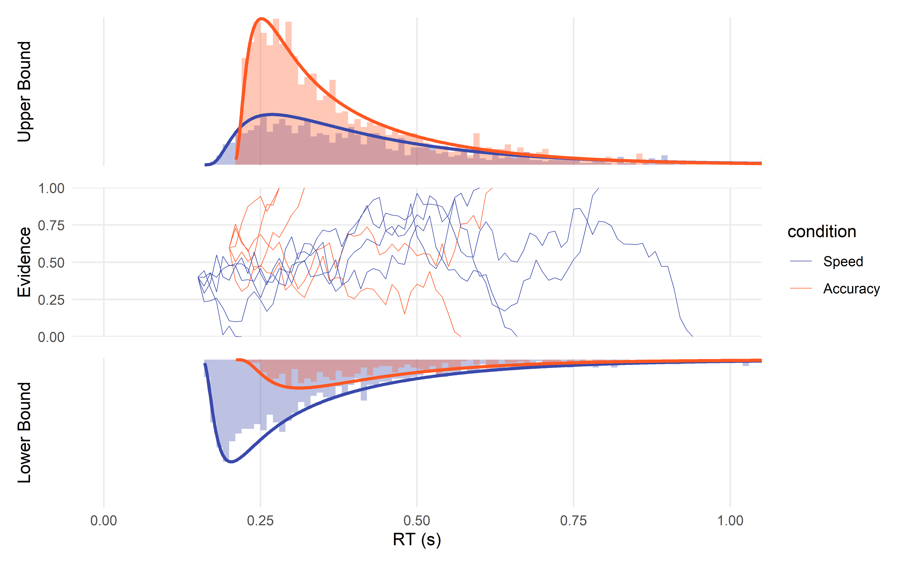

Tools and examples for modelling Reaction Times in R
[WORK IN PROGRESS]

Motivation
This repo started as my attempt at understanding and implementing sequential models, starting with (Hierarchical) Drift Diffusion Models (DDMs) for reaction times in R. Please don’t hesitate to open an issue to discuss and suggest things that could be improved or clarified.
Content
Reaction time (RTs) have been traditionally modelled using traditional linear models (e.g., ANOVAs). However, it is problematic because RTs are not normally distributed. A popular mitigation method is to transform the data (e.g., by log-transform), but it is not a good idea (Schramm & Rouder, 2019). Instead, one should use statistical models that describe or generate RT-like data.
You should start by reading:
- Lindelov’s overview of RT models: An absolute must-read.
- De Boeck & Jeon (2019): A paper providing an overview of RT models.
This repository contain the following vignettes:
Note: these are work-in-progress. Please get in touch if you want to contribute and help, it’s a good way of learning.
Installation
remotes::install_github("DominiqueMakowski/easyRT")
library(easyRT)